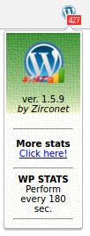
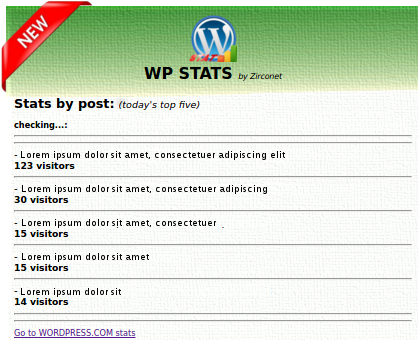
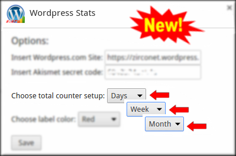
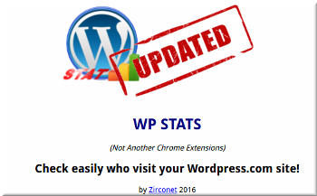
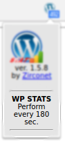
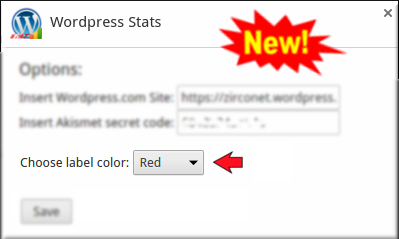
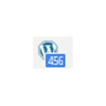

(Not Another Chrome Extensions)
by Zirconet 2016
New version (1.5.9)
- implemented new MORE STATS POPUP showing current best posts and their visitors;
- new background image.

ver. 1.5.8
- you can now set in Option total counter range (daily, weekly, monthly);
- arranged new option.html page;
- implemented detection Chrome extension first run / update;
- created update.html page;
- check delay now is every 180 sec.

ver. 1.5.7
- now it is possible set in Option label color (red, blue, purple, green, yellow, orange).

ver. 1.5.6
- changed label color in blue;
- changed WP Stat url web site.
ver. 1.5.0
- add popup;
- autorun Option when install;
- instant check saving setting;
- instant check at the start.
ver. 1.1.0
- add Option Popup;
- add blink notification;
- check delay 60s.
ver. 1.0.0
- extention complete.